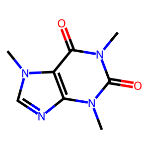
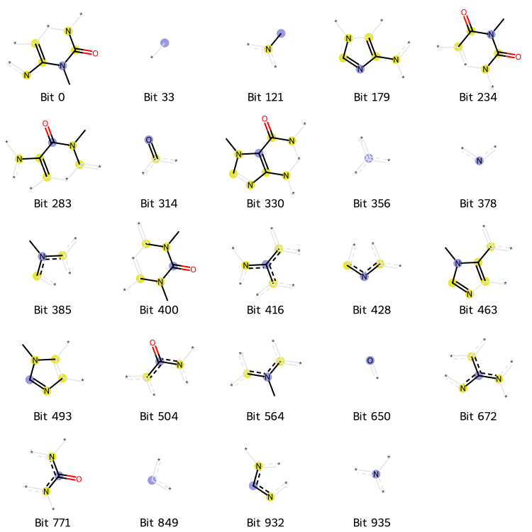

[ ]:
!pip install rdkit
Molecular Fingerprints¶
[2]:
import numpy as np
from collections import OrderedDict
import rdkit.Chem as Chem
import rdkit.Chem.AllChem as AllChem
import rdkit.Chem.Draw as Draw
from rdkit.Chem.Draw import rdMolDraw2D
from IPython.display import SVG
Load Caffeine Molecule from SMILES¶
[3]:
smi = "Cn1c(=O)c2c(ncn2C)n(C)c1=O"
mol = Chem.MolFromSmiles(smi)
Draw¶
[4]:
width, height = 300, 300
# Render high resolution molecule
drawer = rdMolDraw2D.MolDraw2DSVG(width, height)
opts = drawer.drawOptions()
opts.bondLineWidth = 5
drawer.DrawMolecule(mol)
drawer.FinishDrawing()
svg = drawer.GetDrawingText()
SVG(svg)
[4]:

Morgan Fingerprint¶
[5]:
bi = {} # bit info
fp = AllChem.GetMorganFingerprintAsBitVect(mol, 2, nBits=1024, bitInfo=bi)
print("Number of 1-bit:", np.sum(fp))
Number of 1-bit: 24
[12:44:48] DEPRECATION WARNING: please use MorganGenerator
[6]:
on_bits = [(mol, i, bi) for i in fp.GetOnBits()]
labels = [f"Bit {str(i[1])}" for i in on_bits]
Draw.DrawMorganBits(on_bits, molsPerRow=5, legends=labels)
[6]:

Functional Group Fingerprint¶
[7]:
# predefine a few
PATTERNS = OrderedDict({
"alkane": ["[CX4]"],
"halogen": ["[$([F,Cl,Br,I]-!@[#6]);!$([F,Cl,Br,I]-!@C-!@[F,Cl,Br,I]);!$([F,Cl,Br,I]-[C,S](=[O,S,N]))]"],
"alcohol": ["[O;H1;$(O-!@[#6;!$(C=!@[O,N,S])])]"],
"ether": ["[OD2]([#6])[#6]"],
"amine": ["[NX3;H2,H1;!$(NC=O)]"], # "[N;$(N-[#6]);!$(N-[!#6;!#1]);!$(N-C=[O,N,S])]"
"amide": ["[NX3][CX3](=[OX1])[#6]"],
"enamine": ["[NX3][CX3]=[CX3]"],
"aldehyde": ["[CH;D2;!$(C-[!#6;!#1])]=O"],
"ketone": ["[#6][CX3](=O)[#6]"],
"carboxylic acids": ["[CX3](=O)[OX2H1]"],
})
[8]:
def get_atomids_in_functional_group(mol, pat_strs):
results = []
for pat_str in pat_strs:
pattern = Chem.MolFromSmarts(pat_str)
matches = mol.GetSubstructMatches(pattern)
if matches:
results.extend(matches)
return results
[9]:
# binary
print("Binary functional-group fingerprint:")
for name, pattern_str in PATTERNS.items():
pat_strs = PATTERNS[name]
results = get_atomids_in_functional_group(mol, pat_strs)
print(f"{name}: {1 if len(results) > 0 else 0}")
Binary functional-group fingerprint:
alkane: 1
halogen: 0
alcohol: 0
ether: 0
amine: 0
amide: 0
enamine: 0
aldehyde: 0
ketone: 0
carboxylic acids: 0
[10]:
# count-based
print("Count-based functional-group fingerprint:")
for name, pattern_str in PATTERNS.items():
pat_strs = PATTERNS[name]
results = get_atomids_in_functional_group(mol, pat_strs)
print(f"{name}: {len(results)}")
Count-based functional-group fingerprint:
alkane: 3
halogen: 0
alcohol: 0
ether: 0
amine: 0
amide: 0
enamine: 0
aldehyde: 0
ketone: 0
carboxylic acids: 0